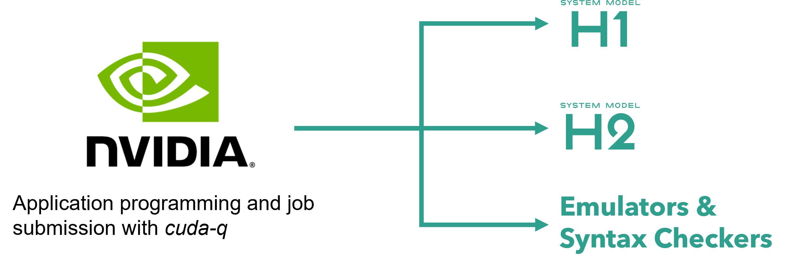

NVIDIA CUDA-Q¶
CUDA Quantum (CUDA-Q) is a framework developed by NVIDIA designed for quantum computing applications. It is part of NVIDIA’s efforts to integrate quantum computing with classical computing systems, specifically targeting quantum circuit simulation, quantum algorithms, and hybrid quantum-classical workflows. CUDA-Q leverages the power of CUDA (NVIDIA’s parallel computing platform) to accelerate quantum computing simulations and provides a foundation for quantum software development that can run on NVIDIA GPUs. CUDA-Q is available for use as a python package, cudaq.
CUDA-Q provides the ability to program quantum kernels and submit kernels to Quantinuum Systems for execution. All jobs submitted with CUDA-Q to Quantinuum Systems are visible in the Nexus portal. However, end users are required to write custom code and use local storage to manage and save job, respectively.
CUDA-Q kernels are compiled to MLIR and then lowered to Quantum Intermediate Representation (QIR). Communication with Quantinuum endpoints are based on the QIR standard. User specification of compiler and emulator noise model API options are not supported.
Installation¶
Note
Docker is required for accessing CUDA-Q, please see here for installation instructions.
For access to CUDA-Q without Docker, please see NVIDIA’s installation instructions here.
CUDA-Q can be accessed via a prebuilt docker image. The docker image can be pulled from NVIDIA’s artifactory using the following command:
docker pull nvcr.io/NVIDIA/quantum/cuda-quantum:cu12-0.9.0
The docker image can be initiated with the following command. The CLI argument -p 8888:8888 forwards the port 8888 on the image to port 8888 on the host machine.
docker run -p 8888:8888 -it nvcr.io/nvidia/quantum/cuda-quantum:cu12-0.9.0
CUDA-Q end users can access the Quantinuum API from either C++ or Python. Quantinuum requires a credential configuration file. The email address and the password must be stored in the environment variables, EMAIL and PASSWORD, respectively. The REST API needs to be queried with the curl and jq commands to generate an access token.
curl POST -H "Content Type: application/json" \
-d "$(jq -n --arg email "$EMAIL" --arg password "$PASSWORD" \
'{ "email": $email, "password": $password }')" \
https://qapi.quantinuum.com/v1/login > $HOME/credentials.json
The jq command can be used to load the access token into local config files stored on disk.
echo "key: $(cat $HOME/credentials.json | jq -r '."id-token"')" >> $HOME/.quantinuum_config
echo "refresh: $(cat $HOME/credentials.json | jq -r '."refresh-token"')" >> $HOME/.quantinuum_config
Note
The curl and jq tools can be installed on the image with apt-get.
sudo apt-get update && apt-get install curl jq
The .quantinuum_config file needs to be specified with the environment variable CUDAQ_QUANTINUUM_CREDENTIALS.
export CUDAQ_QUANTINUUM_CREDENTIALS=$HOME/.quantinuum_config
A jupyter notebook instance can be started in the image with the following command.
python -m jupyter notebook nvidia.ipynb --ip 0.0.0.0 --no-browser --allow-root
cudaq will be available for use in the jupyter environment. The current jupyter session can be accessed on the host machine via the URL http://localhost:8888.
Application Programming¶
All quantum programs use the kernel decorator, cudaq.kernel(). The available gateset is specified here: Quantum Operations. All gate operations are rebased to the native Quantinuum gateset before program execution. All programs submitted to Quantinuum Systems must contain measurement operations on all qubits (mz).
Gate angles are specified in radians
import cudaq
import numpy as np
@cudaq.kernel
def primitive():
coeff: float = -0.111 * np.pi / 2
qvector = cudaq.qvector(2)
x.ctrl(qvector[1], qvector[0])
rz(coeff, qvector[0])
x.ctrl(qvector[1], qvector[0])
Mid-circuit meaasurement and reset (MCMR) operation via mz and reset operation.
@cudaq.kernel
def mcmr():
ancilla = cudaq.qubit()
qvector = cudaq.qvector(2)
results = []
for _ in range(3):
for q in qvector:
cx(q, ancilla)
results += mz(ancilla)
reset(ancilla)
Native conditional branching to control operations using MCMR results.
import numpy as np
@cudaq.kernel
def verification(n_qubits: int):
qvector = cudaq.qvector(n_qubits)
qvector_reversed = qvector[::-1]
for qi, qj in zip(qvector_reversed[:-1], qvector[1:]):
x.ctrl(qi, qj)
bz = mz(qvector[0])
reset(qvector[0])
if bz:
x(qvector[0])
for qi, qj in zip(qvector[:-1], qvector[1:]):
x.ctrl(qi, qj)
Job Submission¶
The cudaq.set_target() function can be used to specify quantinuum as the target backend and the H1-1SC syntax checker as the target machine.
import cudaq
cudaq.set_target("quantinuum", machine="H1-1SC")
The kernel below performs a CX teleportation on qubits qvector[0] and qvector[3].
@cudaq.kernel
def cx_teleportation():
qvector = cudaq.qvector(4)
h(qvector[1])
x.ctrl(qvector[1], qvector[2])
x.ctrl(qvector[0], qvector[1])
r1 = mz(qvector[1])
if r1:
x(qvector[2])
x.ctrl(qvector[2], qvector[3])
h(qvector[2])
r2 = mz(qvector[2])
if r2:
z(qvector[3])
The cudaq.sample_async() function can be called to submit the CX teleportation kernel to the H1-1SC syntax checker, returning a python future, cudaq.AsyncSampleResult.
syntax_check = cudaq.sample_async(cx_teleportation, shots_count=100)
Local Storage¶
The python future can be saved locally on disk with the json library.
import json
with open("syntax_check.json", "r") as file_io:
json.dump(str(syntax_check), file_io)
Result retrieval in another python session can be performed with cudaq.AsyncSampleResult. The job data must be loaded from disk into the python session.
import json
with open("syntax_check.json", "w") as file_io:
job_data = json.load(file_io)
retrieved_async_results = cudaq.AsyncSampleResult(str(job_data))
Default Quantinuum API Options¶
CUDA-Q does not allow end users to modify compiler options via API options. By default, all kernels submitted to a Quantinuum target are optimized with a server-side TKET compilation pass to rewrite the program to use Quantinuum’s native gateset. In addition, all 2-qubit gates are rebased to RZZ, a native parameterized 2-qubit gate operation available on Quantinuum Systems.
CUDA-Q does not allow user customization of the emulator noise model. For a specification of noise model API options, please see the emulator user guide.
Job Visibility in the Nexus Portal¶
All jobs submitted with CUDA-Q are assigned a Unique Universal Identifier (UUID). The Nexus Portal provides visibility on the UUID, in addition to job metadata, such as job status and submission date and time. The Nexus portal can be accessed using Quantinuum Systems credentials. Access the Nexus Portal here
The jobs page shows a Quantinuum Systems tab. The tab displays all jobs submitted with CUDA-Q to Quantinuum targets. These jobs are not retrievable with CUDA-Q. The job ID, quantum program and job result should be saved locally by the user. Guidance on local storage of job data is provided here.
API Reference¶
Relevant links to the CUDA-Q documentation are specified below.
User Guide: Code documentation
Default Operations: Quantum Operations
C++ API: CUDA-Q C++ API
Python API: CUDA-Q Python API
Language Specification: Language Specification
FAQs¶
Q: What are the unique capabilities that cannot be accessed with CUDA-Q?
A: CUDA-Q provides support to use conditional operations, MCMR and noisy Quantinuum emulators. Only TKET and Nexus enables usage of advanced capabilities, such as job batching, the QEC Decoder Toolkit, \(RZZ\) and \(SU(4)\) parameterized 2-qubit gates and a user-customized noise model for emulation.
Q: What jobs visibility is provided post CUDA-Q submission?
A: The Quantinuum Systems tab on the Jobs page of the Nexus Portal provides visibility on CUDA-Q submissions. See here for more information.
Q: Do both python and C++ API provide access to Quantinuum Systems?
A: Yes, both the python and C++ APIs provide access to Quantinuum Systems.
Q: Is server-side compilation performed on CUDA-Q programs submitted to Quantinuum Systems?
A: Yes, TKET compilation rewrites the program to use the native Quantinuum gateset and performs further optimizations to minimize redundancy or merge gates. Additionally, the native parameterized angle \(RZZ\) is the native 2-qubit gate executed on the system.
Support¶
For any issues accessing Quantinuum Systems, please contact QCSupport@quantinuum.com. The troubleshooting and FAQs documents also provide support on common issues experienced by customers.